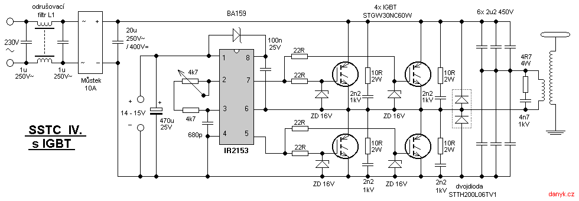

Les expériences et projets présentés sur ce site peuvent se montrer extrêmement dangereux. Les radiations ionisantes peuvent mener à des brûlures radiologiques, provoquer des cancers et nuire fortement à la santé. La haute tension (ou basse tension) peut provoquer des brûlures, des arrêts cardiaques, des contractions musculaires, des paralysies respiratoires, ainsi que d'innombrables autres soucis. Reproduisez à vos risques et périls. Je décline toute responsabilité en cas de dommages physiques, matériels ou de santé subis suite à la lecture de ce site.
Une SSTC simple sur secteur, utilisant un demi-pont de 2 IGBT (STGW30NC60WD), et le driver simple de DiodeGoneWild (danyk.cz) avec un IR2153.
Il s'agit d'une SSTC très simple. Le secondaire n'est pas adapté, mais encore une fois, j'étais trop fatigué pour en refaire un. Voici les spécifications :
Je n'ai effectivement pas fini cette SSTC, et je ne vais probablement pas la finir. Je ne l'abandonne pas par manque d'intérêt ou par flemme. Mais tout simplement, car j'ai déjà tué 18 IGBT. Je pourrais la faire fonctionner davantage, mais je préfère dépenser mon argent dans ma future DRSSTC.
